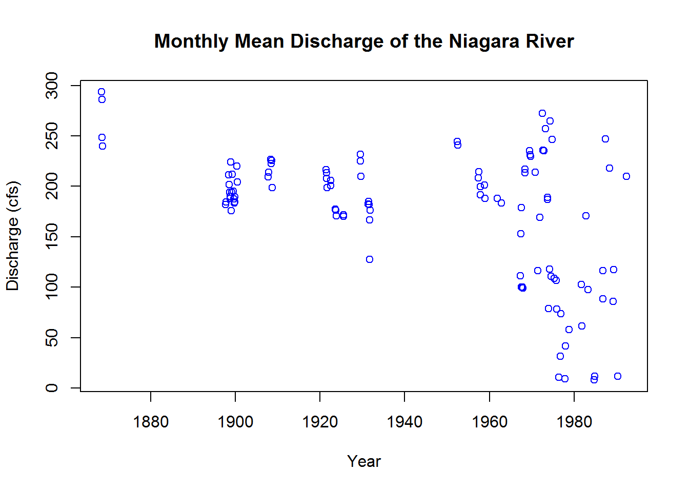
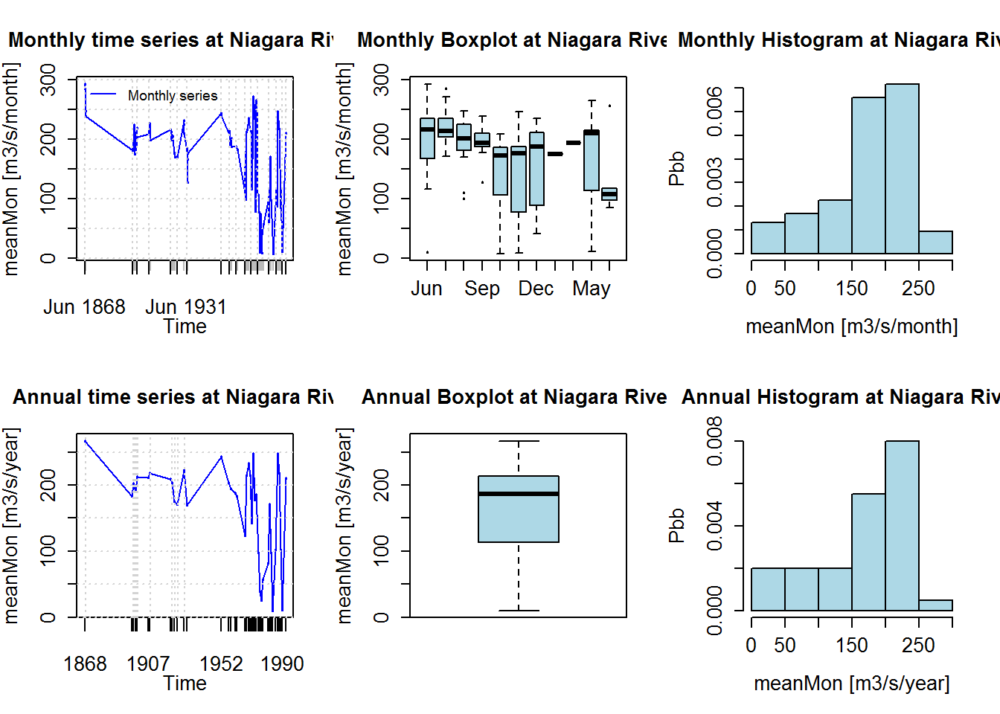
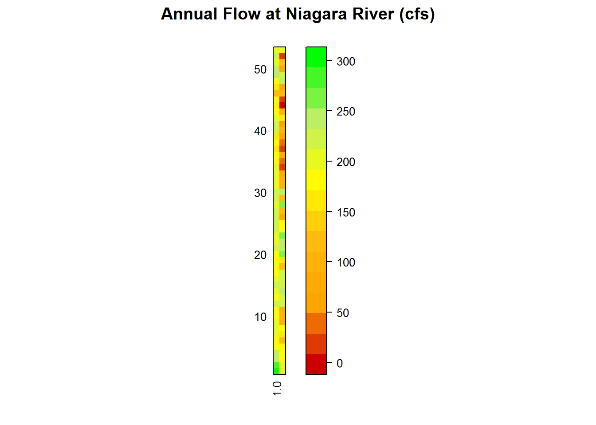

The Niagara River watershed is not only the land draining to the river, but also includes the drainage area of the other Great Lakes “upstream”: Lake Erie, Lake Huron, and Lake Michigan/Lake Superior. In order to investigate a relationship between precipitation within the watershed and discharge through the Niagara River, several problems arise in quantifying the data. First, the Lake Erie watershed data is international, shared with Canada. As of now, there is not a common dataset for the Great Lakes, making collaboration for watershed management difficult. Second, there may be a significant lag in precipitation events and discharge reaction with a watershed system this large. Third, snow melt and ice cover of the lakes will affect flow throughout the lakes, and the ability to measure discharge.
The questions I will be pursuing through this project are
Has the flow rate of the Niagara River changed over time?
Is there a relationship between precipitation and discharge in the Niagara River?
If so, what level of detail is needed to ascertain this relationship?
My hypotheses to these questions are that yes, the flow rate has changed with time as land and water use has changed the watershed, there is a relationship between discharge and precipitation, and that it will be sufficient to incorporate flow from the St. Clair River (from Lake Huron), the subwatersheds surrounding Lake Erie, and the Niagara watershed to see a relationship to the discharge measured at the downstream end of the river.
Load any required packages (Some packages may need to be installed):
library(magrittr)
library(sp)
library(xts)
library(zoo)
library(hydroTSM)
library(ggplot2)
library(dplyr)
library(tidyr)
library(readxl)
library(dataRetrieval)
library(data.table)
knitr::opts_chunk$set(cache=TRUE) # cache the results for quick compilingMy discharge data for the Niagara River comes from the Army Corps of Engineers website The description of their Niagara River sampling locations are shown in the table below:
| Location | Established | Description | Measurements |
|---|---|---|---|
| Bridge | 1897 | Along the downstream edge of the International Railroad Bridge, which spans the Niagara River from Buffalo, New York to Fort Erie, Ontario | Made directly from the bridge |
| Open | 1899 | About 1,800 feet downstream of the International Railroad Bridge, just below Unity Island | Not given |
| Bridgeburg | 1921 | along the upstream edge of the International Railroad Bridge, which spans the Niagara River from Buffalo, New York to Fort Erie, Ontario | Made directly from the bridge |
| BlackRock | 1931 | It was nearly identical to the Open Section. It was located about 1,800 feet north of the International Railroad Bridge, just below Unity Island. | Not given |
| Wickwire | 1931 | It was nearly identical to the Split Section, although little information is available from any previous measurements. It was it was located about 2-3/4 miles north of Buffalo, New York and spanned the river between the U. S. mainland and Grand Island. | Not given |
| Oakfield | 1931 | It was nearly identical to the Split Section also, although little information is available from any previous measurements. This section traversed the river from Grand Island west to the Canadian mainland. | Not given |
| Austin Street | 1952 | On the upper Niagara River, it extended approximately 1,840 feet from the Canadian shore at Fort Erie, Ontario to Buffalo, New York, on the U. S. mainland. | Not given |
| Stella Niagara | 1957 | In the lower Niagara River, about 1-1/2 miles below Lewiston, New York and extended from the Canadian to the U. S. mainland. | Not given |
| Maid-of -the -Mist | 1967 | It was located in the Maid-of the –Mist Pool, approximately 1,500 feet downstream of the Rainbow Bridge. | Not given |
| Niagara | 1868 | In the lower Niagara River near Youngstown, New York, about 3 miles above the mouth of the river. | Not given |
| Chippewa Channel | 1967 | In the Chippewa Channel of the Niagara River about ½ mile below Bayer’s Creek. It extended between the Canadian mainland and Grand Island. | Not given |
| Tonawanda Channel | 1967 | In the Tonawanda Channel of the Niagara River about 1/3 mile northeast of Two Mile Creek at Tonawanda, New York. It extended from the U. S. mainland to Grand Island. | Not given |
| International Railroad Bridge | 1970 | About 408 feet above the International Railroad Bridge on the upper Niagara River. | Not given |
| American Falls | 1971 | consisted of two segments. The first was the Bridal Veil Channel segment, between Goat Island and Green Island. It was metered from the upstream side of the Bridal Veil portion of the Goat Island Bridge. The second was the American Falls Channel segment between Green Island and the U. S. mainland. | Metered from the downstream side of the American Falls portion of the Bridge. |
| Moses | 1971 | Located about 500 feet upstream of the Robert Moses Powerhouse tail race. | Not given |
| Cableway | 1973 | A cableway was installed spanning the Niagara Gorge, approximately at the location of the Moses Section. It is about 500 feet upstream of the Robert Moses tail race on the lower Niagara River. | Not given |
The comma separated value (csv) file that the above hyperlink returns can be downloaded straigt to R using the following code:
Qdata<-fread("http://www.lre.usace.army.mil/Portals/69/docs/GreatLakesInfo/docs/DischargeMeasurement/DischargeData/NiagaraRiverDischargeData.csv")
Qdata=select(Qdata,'Cross.Section.Name'='Cross-Section Name','Discharge'='Discharge/tcfs', 'Year', 'Month','Day','Time'='Start Time')
Qdata[Qdata$Year==1931&Qdata$Month==9&Qdata$Day==31,"Day"]=30## Warning in `[<-.data.table`(`*tmp*`, Qdata$Year == 1931 & Qdata$Month == :
## Coerced 'double' RHS to 'character' to match the column's type; may have
## truncated precision. Either change the target column to 'double' first
## (by creating a new 'double' vector length 2004 (nrows of entire table) and
## assign that; i.e. 'replace' column), or coerce RHS to 'character' (e.g. 1L,
## NA_[real|integer]_, as.*, etc) to make your intent clear and for speed. Or,
## set the column type correctly up front when you create the table and stick
## to it, please.head(Qdata)## Cross.Section.Name Discharge Year Month Day Time
## 1: American Falls 12.6 1971 6 2 8:00
## 2: American Falls 13.4 1971 6 3 7:30
## 3: American Falls 13.7 1971 6 3 10:05
## 4: American Falls 13.4 1971 6 3 13:15
## 5: American Falls 12.7 1971 6 3 14:55
## 6: American Falls 10.3 1971 6 3 18:15Let’s work with the data now. I am going to compile the separate columns for the date: Year, Month, and Day; into a single Date column:
Qdata$Date=as.Date( with(Qdata,paste(Year, Month , Day , sep = "-" ),"12-31-9999", format = "%Y-%m-%d" ))
head(Qdata)## Cross.Section.Name Discharge Year Month Day Time Date
## 1: American Falls 12.6 1971 6 2 8:00 1971-06-02
## 2: American Falls 13.4 1971 6 3 7:30 1971-06-03
## 3: American Falls 13.7 1971 6 3 10:05 1971-06-03
## 4: American Falls 13.4 1971 6 3 13:15 1971-06-03
## 5: American Falls 12.7 1971 6 3 14:55 1971-06-03
## 6: American Falls 10.3 1971 6 3 18:15 1971-06-03We’ll find the monthly mean discharge and standard deviation for the Niagara River:
meanQdata=Qdata%>%
group_by(Year,Month)%>%
summarise(meanDischarge = mean(Discharge,na.rm=T),
sdDischarge = sd(Discharge,na.rm=T))
data.table(meanQdata)## Year Month meanDischarge sdDischarge
## 1: 1868 6 293.55455 25.905882
## 2: 1868 7 286.03000 19.715772
## 3: 1868 8 248.31000 12.142743
## 4: 1868 9 239.69286 27.894071
## 5: 1897 10 181.85000 12.328357
## ---
## 102: 1988 5 218.13289 6.353086
## 103: 1989 4 85.93333 25.768197
## 104: 1989 5 117.41714 106.290477
## 105: 1990 5 11.44000 1.406900
## 106: 1992 5 210.01695 47.195650I want to treat the data with the R package hydroTSM, which helps analyze hydrological data with time series. To do this, I need to get my data into a format that is compatible with the xts package.
Qdata<-data.table(Qdata)
QDT<-as.data.table(Qdata)
head(QDT)## Cross.Section.Name Discharge Year Month Day Time Date
## 1: American Falls 12.6 1971 6 2 8:00 1971-06-02
## 2: American Falls 13.4 1971 6 3 7:30 1971-06-03
## 3: American Falls 13.7 1971 6 3 10:05 1971-06-03
## 4: American Falls 13.4 1971 6 3 13:15 1971-06-03
## 5: American Falls 12.7 1971 6 3 14:55 1971-06-03
## 6: American Falls 10.3 1971 6 3 18:15 1971-06-03QDT<-select(QDT,Date,Discharge)
Qxts<-as.xts.data.table(QDT)The hydroTSM package contains a function to process daily data to monthly and annual. For my purposes, I want to see the monthly mean to make sure there is not too much discrepancy over the large time period in the measurements.
meanMon<-daily2monthly(Qxts,FUN=mean)
head(meanMon)## 1868-06-01 1868-07-01 1868-08-01 1868-09-01 1897-10-01 1897-11-01
## 293.5545 286.0300 248.3100 239.6929 181.8500 184.4000Now that we have it in a monthly time series format, let’s plot the data:
mMon<-plot(meanMon,
type="p",
ylab="Discharge (cfs)",
xlab="Year",
main="Monthly Mean Discharge of the Niagara River",
col="blue"
) hydroTSM has some required maintenance code for use in calculations:
dates<-time(meanMon)
nyears<-yip(from = start(meanMon),to=end(meanMon),out.type = "nmbr")Let’s take a look at the summary information for the Niagara River discharge measurements.
smry(meanMon)## Index meanMon
## Min. 1868-06-01 7.9750
## 1st Qu. 1908-08-16 120.3000
## Median 1957-11-16 188.7000
## Mean 1944-04-20 173.3000
## 3rd Qu. 1974-03-01 214.5000
## Max. 1992-05-01 293.6000
## IQR <NA> 94.1745
## sd <NA> 65.5914
## cv <NA> 0.3785
## Skewness <NA> -0.8924
## Kurtosis <NA> 0.1179
## NA's <NA> 0.0000
## n <NA> 106.0000From this, we can see that the lowest flow of record occurred in June 1868, with a flow of approximately 8 cfs and the highest flow occurred in May 1992 with approximately 294 cfs. The mean flow is 173 cfs.
HydroTSM can show the data in different ways to explore the hydrography of the region.
hydroplot(meanMon,var.type = "Flow",main = "at Niagara River",pfreq = "dm",from = "1868-06-01")## [Warning: 'x' is a monthly object, so 'pfreq' has been changed to 'ma']
It displays it as the time series, where it is observed that the flow of the Niagara River has seen a dramatic change since measurements began 124 years ago. 1967 was the first time when the monthly discharge averaged less than 100 cfs.
M <- matrix(m, ncol=53, byrow = TRUE)
require(lattice)## Loading required package: latticeprint(matrixplot(M,ColorRamp = "Days",main = "Annual Flow at Niagara River (cfs)")) Plotting the monthly flow values for each year, useful for identifying high/low flow months.